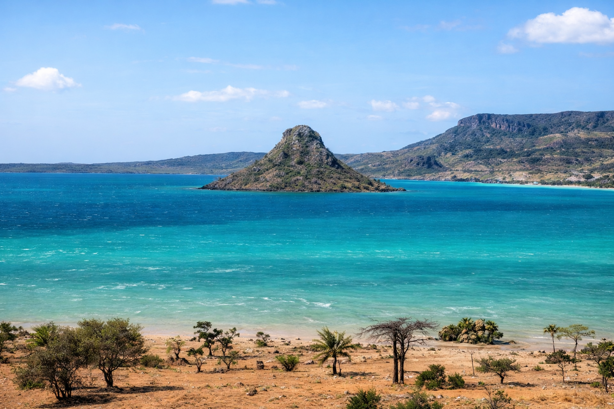

Morondava
45k
Allée des Baobabs
Spectacle légendaire de géants au coucher du soleil

RetourLe sanctuaire naturel de l'Océan Indien
Madagascar, quatrième plus grande île du monde, est un véritable laboratoire de l'évolution. Isolée depuis des millions d'années, elle abrite une biodiversité que l'on ne trouve nulle part ailleurs, dont les célèbres lémuriens et les majestueux baobabs. Entre ses hauts plateaux à l'architecture de briques rouges, ses forêts tropicales humides, ses déserts épineux et ses lagons turquoise, l'Île Rouge offre un dépaysement total et une culture malgache d'une richesse infinie, entre Afrique et Asie.
Découvrez les 15 joyaux du patrimoine malgache
Spectacle légendaire de géants au coucher du soleil

Forêt de pics calcaires acérés classée à l'UNESCO

Canyons de grès, piscines naturelles et tombeaux Bara

L'archipel paradisiaque aux senteurs d'Ylang-Ylang

Le palais de la reine sur la colline sacrée d'Analamanga

Forêt humide sanctuaire du lémurien bambou doré

Repaire de pirates et sanctuaire des baleines à bosse

Succession de lacs et lagunes au fil de l'eau

Deuxième plus grande baie au monde après Rio

Le chant mystérieux de l'Indri-Indri, le plus grand lémurien

Montagnes escarpées rencontrant les vagues de l'extrême sud

La plus grande aire protégée de l'île (Forêt & Mer)
Cité sacrée et berceau de la monarchie Merina
Barrière de corail et villages de pêcheurs Vezo
Éphémères formations d'argile sculptées par l'érosion
Une identité unique entre deux mondes.
Le peuple malgache est né d'un brassage fascinant entre les migrants austronésiens venus d'Asie du Sud-Est et les populations africaines. Cette double origine se reflète dans la langue, l'architecture des hauts plateaux et surtout dans les rites sacrés comme le Famadihana (retournement des morts). La culture de l'île est régie par le "Fihavanana", valeur d'entraide et de solidarité communautaire.
Un rite funéraire joyeux où l'on change les linceuls des ancêtres pour honorer leur mémoire.
Une dynastie puissante qui a unifié l'île au XIXe siècle depuis les hauteurs d'Antananarivo.
Madagascar est le premier producteur mondial de cette épice précieuse, héritage d'un savoir-faire unique.
Rythme entraînant des côtes malgaches, symbole de la fête et de la joie de vivre de l'île.

Ramenez l'excellence malgache chez vous. De la vanille la plus fine aux papiers Antemoro faits main.
 Premium
Premium
Gousses charnues et parfumées de la région de la SAVA, le trésor noir de Madagascar.
 Artisanat
Artisanat
Papier végétal incrusté de fleurs séchées, fabriqué selon une technique arabe du XIIe siècle.
 Déco
Déco
Colliers et bracelets polis à la main, reflets naturels allant du blond au noir intense.
L'accessoire indispensable, léger et coloré, fabriqué à partir de fibres de palmier Raphia.
Un poivre rare cueilli en forêt, aux notes boisées et florales exceptionnelles.
Objet d'art sculpté dans les bois précieux de l'île (sous licence contrôlée).

Antananarivo, Lac Anosy

Nosy Be, Plage

Archipel Mitsio, Île Privée

Parc National d'Isalo

Île Sainte-Marie

Antananarivo, Haute Ville
La cuisine malgache est un mariage savoureux entre les épices d'Asie et les produits généreux de la terre rouge. Le riz (Vary) en est l'âme.
Le plat national : bouillon clair de viande (zébu/porc) et de brèdes (feuilles).
Feuilles de manioc pilées cuites avec du porc gras et de l'ail.
Spécialité des côtes : poisson frais mijoté dans du lait de coco onctueux.
Viande de zébu tendre grillée au feu de bois, omniprésente sur l'île.
Riz onctueux mélangé avec des herbes et servi avec des kitoza (viande fumée).
Gâteau de riz et d'arachides broyées, cuit dans des feuilles de bananier.
Condiment épicé à base de carottes, haricots et citrons confits.
Bœuf mijoté longuement jusqu'à évaporation complète de l'eau.
Beignets de riz traditionnels, le petit-déjeuner favori des malgaches.
Grosses gambas d'eau douce ou de mer, grillées à la perfection.
Saucisses artisanales réputées de la cité de l'aluminium.
Boisson acidulée et rafraîchissante, parfaite pour les climats chauds.
Vivez Madagascar à travers ses célébrations culturelles et ses festivals nature.
Célébration du passage des baleines à bosse (Juillet-Août) sur l'île Sainte-Marie.
Festival de musique Salegy à Nosy Be, réunissant des artistes de tout l'Océan Indien.
Cérémonies traditionnelles de retournement des morts (Saison sèche sur les hauts plateaux).
La période idéale. Les températures sont clémentes, les routes sont praticables et c'est le meilleur moment pour observer la faune.
Risques de cyclones. Cependant, c'est la période où la nature est la plus verte et où les orchidées fleurissent.
Restez vigilant en ville. Ne voyagez pas de nuit sur les routes nationales (Taxi-brousses conseillés de jour).
Traitement antipaludéen indispensable. Ne buvez que de l'eau capsulée (Eau Vive). Attention aux coups de soleil (Indice élevé).
Respectez les tabous locaux (Fady). Ils varient selon les régions et les sites sacrés. Demandez toujours à votre guide.
L'Ariary (MGA) est la monnaie. Prévoyez des liasses volumineuses, l'euro est facilement échangeable partout.
Expert Faune & Lémuriens
Lova connaît chaque espèce de lémurien d'Andasibe. Il est un passionné de la forêt humide et de ses secrets.
Guide Culturel & Histoire
Mamy vous fera vibrer au récit des rois Merina et vous guidera dans les dédales de la capitale Antananarivo.
Expert Sud & Canyons
Spécialiste de l'Isalo et du grand sud, Faly est un pisteur exceptionnel pour les randonnées d'aventure.